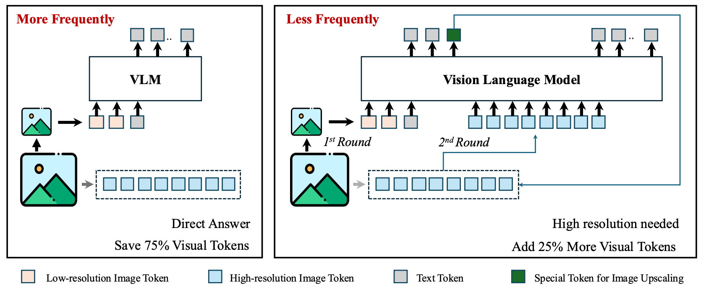

Xin Lai 赖 昕Research Scientist
TikTok
|
|
Biography [CV]
I am currently a researcher at TikTok, researching on Large Multimodal Models (LMMs). Before that, I obtained my Ph.D degree in 2024 from the Chinese University of Hong Kong (CUHK), supervised by Prof. Jiaya Jia and Prof. Liwei Wang. I also received the Bachelor's Degree at Harbin Institute of Technology (HIT) in 2020.
My current research interest includes multimodal understanding and multimodal agents.
We are actively
Recent News
Selected Publications [Google Scholar]
 |
Mini-o3: Scaling Up Reasoning Patterns and Interaction Turns for Visual Search
Xin Lai*, Junyi Li*, Wei Li, Tao Liu, Tianjian Li, Hengshuang Zhao
arXiv pre-print
A full training recipe to reproduce OpenAI o3-style thinking-with-images capability. |
 |
LISA: Reasoning Segmentation via Large Language Model
Xin Lai*, Zhuotao Tian*, Yukang Chen, Yanwei Li, Yuhui Yuan, Shu Liu, Jiaya Jia
CVPR, 2024 (Oral, 3.3% acceptance rate)
Over 2,400 GitHub Stars! |
|  |
VisionThink: Smart and Efficient Vision Language Model via Reinforcement Learning
Senqiao Yang*, Junyi Li*, Xin Lai*, Bei Yu, Hengshuang Zhao, Jiaya Jia
arXiv pre-print
A new paradigm of efficient VLMs with token compression.
|
|
Step-DPO: Step-wise Preference Optimization for Long-chain Reasoning of LLMs
Xin Lai, Zhuotao Tian, Yukang Chen, Senqiao Yang, Xiangru Peng, Jiaya Jia
arXiv pre-print
70.8% and 94.0% accuracy on MATH and GSM8K, respectively! Outperforms GPT-4-1106, Gemini-1.5-Pro, Claude-3-Opus! |
|
|
LongLoRA: Efficient Fine-tuning of Long-Context Large Language Models
Yukang Chen, Shengju Qian, Haotian Tang, Xin Lai, Zhijian Liu, Song Han, Jiaya Jia
ICLR, 2024 (Oral Presentation)
Over 2,700 GitHub Stars! |
|
 |
Mask-Attention-Free Transformer for 3D Instance Segmentation
Xin Lai, Yuhui Yuan, Ruihang Chu, Yukang Chen, Han Hu, Jiaya Jia
ICCV, 2023
|
 |
Spherical Transformer for LiDAR-based 3D Recognition
Xin Lai, Yukang Chen, Fanbin Lu, Jianhui Liu, Jiaya Jia
CVPR, 2023
|
 |
Stratified Transformer for 3D Point Cloud Segmentation
Xin Lai*, Jianhui Liu*, Li Jiang, Liwei Wang, Hengshuang Zhao, Shu Liu, Xiaojuan Qi, Jiaya Jia
CVPR, 2022
A pioneering fully transformer-based 3D fundamental network. |
 |
DecoupleNet: Decoupled Network for Domain Adaptive Semantic Segmentation
Xin Lai, Zhuotao Tian, Xiaogang Xu, Yingcong Chen, Shu Liu, Hengshuang Zhao, Liwei Wang, Jiaya Jia
ECCV, 2022
|
 |
Semi-supervised Semantic Segmentation with Directional Context-aware Consistency
Xin Lai, Zhuotao Tian, Li Jiang, Shu Liu, Hengshuang Zhao, Liwei Wang, Jiaya Jia
CVPR, 2021
[paper|code]
|
Open-source Projects
|
Sparse Transformer
Xin Lai, Fanbin Lu, Yukang Chen
Open-source Library
[code]
Fast, memory-efficient, and easy-to-use implementation for window-based 3D Transformer, well optimized by low-level CUDA code. |
Experiences
|
July 2023 - Jan. 2024, Tencent Co.,Ltd. Internship, Mentor: Dr. Yanpei Cao |

|
Dec. 2022 - May 2023, Microsoft Research Asia (MSRA) Collaboration, Mentor: Dr. Yuhui Yuan |
Honors and Awards
- Outstanding Reviewer, CVPR, 2023
- Postgraduate Scholarship, CUHK, 2020-2024
- Outstanding Graduate, HIT, 2020
- National Scholarship (Top 1%), China, 2018
- Fung Scholarship, Hong Kong, 2018
- Provincial Merit Student (Top 2%), China, 2018
- People's Scholarship, HIT, 2016-2018
Professional Services
International Conference on Learning Representations (ICLR’24)
Winter Conference on Applications of Computer Vision (WACV’24)
Conference and Workshop on Neural Information Processing Systems (NeurIPS’23)
IEEE Conference on Computer Vision and Pattern Recognition (CVPR’22,23)
IEEE International Conference on Computer Vision (ICCV’21,23)
European Conference on Computer Vision (ECCV’22)
IEEE Transactions on Image Processing (TIP)
Pattern Recognition (PR)
Teaching
| 2021-2022 | Fall | ENGG 1110: Problem Solving By Programming |
| 2020-2021 | Spring | CSCI 3251: Engineering Practicum |
| 2020-2021 | Fall | ENGG 1110: Problem Solving By Programming |